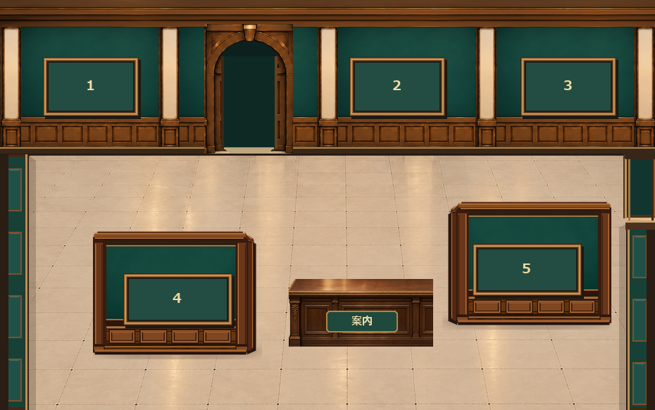

展示室1｜展示設備の配置3案
西・東・北の壁と出入口を維持し、独立展示壁2枚と案内台だけを移動しています。右端の入口から、左方向へスクロールして比較できます。
P｜前後差を強める
右を奥、左を手前に配置。横に歩くにつれて壁の見え方が変わります。

実際の室内を操作するゲームではなく、静的な美術・建築プレビューです。
5枠・北の展示室3行き・右奥のエントランス入口・西側の閉じた壁はすべて共通。見た目の配置以外のゲーム仕様は変更していません。
西・東・北の壁と出入口を維持し、独立展示壁2枚と案内台だけを移動しています。右端の入口から、左方向へスクロールして比較できます。
右を奥、左を手前に配置。横に歩くにつれて壁の見え方が変わります。

実際の室内を操作するゲームではなく、静的な美術・建築プレビューです。
5枠・北の展示室3行き・右奥のエントランス入口・西側の閉じた壁はすべて共通。見た目の配置以外のゲーム仕様は変更していません。